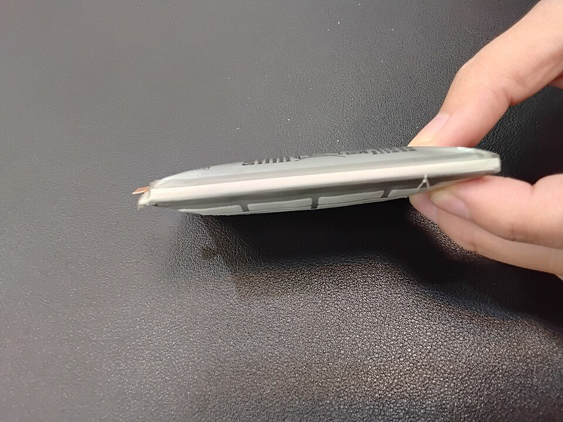

スマートフォンの買い替え時期と費用：使用年数・OSの更新期限・電池の目安と、値引きのルール（2026年版）
要点まとめ
スマートフォンは毎日使う道具なので、買い替えの時期と費用は気になるところです。この記事では、何年くらいで買い替える人が多いか、買い替えの目安になる公式の情報（OSの更新期限・電池・通信方式）、そして本体の価格と値引きのルールを、内閣府・総務省の統計と、メーカー・通信会社の公式情報でまとめました。特定の機種や携帯会社をすすめるものではありません。
何年で買い替える人が多いか
携帯電話は、家電の中で最も早く買い替えられる
平均使用年数は4.6年。エアコンや冷蔵庫の3分の1ほど
内閣府の消費動向調査（2026年3月実施）では、携帯電話の平均使用年数は4.6年で、調べた11品目の中で最も短くなりました[1]。平均使用年数は、買い替えた世帯だけで計算した値です[1]。この調査の携帯電話には、スマートフォンとそれ以外の携帯電話の両方が含まれます[1]。
使う年数は、20年で約2倍に延びた
2005年は2.4年。最近は4.3〜4.9年で推移
買い替えの理由は、2026年の調査で「故障」が32.4%、「上位品目への移行」が25.6%、「その他」が41.8%でした[1]。2005年は「上位品目への移行」が49.7%で、最も多い理由でした[1]。
目安1：OSとセキュリティの更新期限
| メーカー | 対象 | 期間 |
|---|---|---|
| Pixel 8以降 | 米国のGoogle Storeでの販売開始日から7年間[2] | |
| Pixel 6・7系、Pixel Fold | 販売開始日から5年間[2] | |
| Samsung | Galaxy S26シリーズ | 7世代のOSアップデートと、7年間のセキュリティアップデート[7] |
| Apple | iPhone | 日本語の公式ページで、年数の記載は見つからなかった[8] |
期間は「発売日から」数える
発売から時間がたった機種は、残りの更新期間が短い
Pixelの更新期間は、買った日ではなく、米国のGoogle Storeで販売が始まった日から数えます[2]。発売から数年たった機種を安く買うと、更新を受けられる期間はその分短くなります（筆者の見解）。セキュリティの更新が終わった端末は、新しく見つかった弱点が直されないので、買い替えを考える1つの目安になります（筆者の見解）。
目安2：電池の劣化

iPhoneの電池は、500回または1,000回で80%
iPhone 15は1,000回、14以前は500回の充電で容量80%
Appleは、iPhone 14以前の電池は500回、iPhone 15モデルは1,000回のフル充電を繰り返したときに、本来の容量の80%を保つよう設計しているとしています（理想的な条件の場合）[3]。通常の使い方による電池の劣化は保証の対象外ですが、AppleCareに入っていれば、容量が80%を下回ったときに追加料金なしで交換できます[9]。電池だけを交換すれば、本体を買い替えずに使い続ける方法もあります（筆者の見解）。
くわしく
- 保証の対象外の交換料金は、Appleの公式ページで機種を選ぶと表示される（税込）[9]
- 今回の調査では、交換料金の金額を公式ページから読み取れなかった
目安3：通信方式の終了
- 2022年3月31日
auの3G（CDMA 1X WIN）が終了
- 2024年4月15日
ソフトバンクの3Gが終了
能登半島地震を受けて、石川県では7月31日まで使えた[11]
- 2026年3月31日
ドコモの3G（FOMA）とiモードが終了
3Gの電波だけで通話・通信する古い端末は、これで大手3社のどの回線でも使えなくなりました（筆者の見解）[10][11][5]。
費用：本体の価格と、値引きのルール
最新機種は10万円を大きく超える
iPhone 18 Proは219,800円から（税込）
| 機種 | 価格 |
|---|---|
| iPhone 18 Pro | 219,800円から（税込）[12] |
| iPhone 17 | 159,800円から[12] |
| iPhone 17e | 124,800円から[12] |
| Google Pixel 11 | 136,800円から[13] |
税込と明記を確認できたのは、iPhone 18 Proの価格だけです[12]。Appleのオンラインストアでは、古いiPhoneを下取りに出すと値引きになるほか、通信会社の契約と一緒に買うと8,800円、ドコモかソフトバンクに乗り換えると20,000円の割引があります[12]。
通信会社の値引きは、原則4万円（税抜）まで
2023年12月27日から、値引きの上限は原則4万円（税抜）
| 端末の定価 | 値引きの上限 |
|---|---|
| 8万円を超える | 4万円 |
| 4万〜8万円 | 定価の50% |
| 2万〜4万円 | 2万円 |
| 2万円以下 | 定価未満の額 |
出典: [14][4]。上限の金額は税抜で計算します[4]。総務省は、通信の契約とセットで端末を買うときの「白ロム割」も、この上限に含めるとしています[15]。改正前は、上限が一律2万円で、白ロム割は対象外でした[15]。
端末購入プログラムは、返す前提の仕組み
将来の買い取り予想価格を、通信会社が計算して公表する
決まった時期に端末を返すと残りの支払いが減る「端末購入プログラム」について、総務省は、通信会社が将来の買い取りの予想価格を計算して公表し、利用者に説明する手続きを定めています[4]。端末を返すことが前提になっているので、使い続けたい人や、傷がついた場合の扱いは、契約の前に確かめる必要があります（筆者の見解）。
中古・契約・処分で損しないために
中古の端末は、赤ロム・SIMロック・初期化を確かめる
赤ロムの端末は、SIMを入れても通話や通信ができない
総務省は、中古の端末を買うときに、ネットワーク利用制限（いわゆる赤ロム）、SIMロック、初期化されているかを確かめるよう案内しています[17]。赤ロムの端末は、SIMカードを入れても通話やデータ通信ができません[17]。大手3社で買った端末で2021年9月30日以前に発売されたものは、SIMロックがかかっている可能性があります[18]。
機種変更のとき、不要なオプションに注意
契約書はその場で確かめ、不要ならすぐ解約を申し出る
国民生活センターは2025年12月に、携帯電話を買い替えたときに不要なオプションを付けられていた相談例を紹介しました[19]。契約書をその場でよく確かめ、不要なオプションが付いていたら、すぐにショップに解約を申し出るよう助言しています[19]。困ったときは、消費者ホットライン「188」で相談できます[19]。
古い端末は、認定事業者に出す
小型家電リサイクル法の認定事業者なら、個人情報の漏えいを防ぐ措置がある
環境省は、小型家電リサイクル法の認定事業者になる要件の1つが、端末の個人情報の漏えいを防ぐ措置をとることだと説明しています[20]。認定を受けた事業者は、回収ボックスや回収車などに認定マークを付けています[20]。
今回確認できなかった点
- Appleが公表しているiPhoneのサポート年数（日本語の公式ページで見つからなかった）
- iPhoneの電池交換の料金（公式ページから金額を読み取れなかった）
- iPhone 18 Pro以外とPixel 11の価格が税込かどうか
- ミリ波に対応した端末の上限が適用された日と、2026年の見直しの結論
- 端末の平均価格についての公的な統計
出典（20件）
閲覧日はいずれも2026年11月10日
- 消費動向調査 令和8年3月実施調査結果（内閣府 経済社会総合研究所）
- Pixel スマートフォンで Android アップデートを受け取る時期（Pixel ヘルプ）（Google）
- バッテリー - サービスとリサイクル（Apple）
- 電気通信事業法第27条の3等の運用に関するガイドライン（2024年12月改正）（総務省）
- 「FOMA」および「iモード」サービス終了のご案内（NTTドコモ）
- 令和7年通信利用動向調査 ポイント（2026年5月29日）（総務省）
- Androidバージョンの確認方法は？配信時期も紹介（サムスン電子ジャパン）
- Appleのセキュリティリリース（Apple）
- AppleによるiPhoneのバッテリーのサービスと修理（Apple）
- 3G携帯電話向けサービス「CDMA 1X WIN」終了のご案内（KDDI）
- 3Gサービスを4月15日に終了（2024年3月13日）（ソフトバンク）
- iPhoneを購入（Apple Store オンライン）（Apple）
- Google Pixel 11（Google ストア）（Google）
- 端末販売の適正化等の取組に係る情報提供窓口（総務省）
- 電気通信事業法施行規則等の一部改正（2023年10月）（総務省）
- 電気通信事業法施行規則の一部改正（2024年10月、在庫端末の特例・ミリ波対応端末）（総務省）
- Q4. 中古端末を買うときの注意点は？（総務省 携帯電話ポータルサイト）
- Q3. 端末を変えずに乗り換えられるの？（総務省 携帯電話ポータルサイト）
- 見守り新鮮情報 第529号「不要なオプションが付けられていた！？携帯電話の契約は慎重に」（2025年12月4日）（国民生活センター）
- GIGA端末・小型家電の適正なリサイクル（2024年9月11日）（環境省）
写真・画像の出典（2件）
- テーブルの上の2台のスマートフォン
写真: Artem Beliaikin／Wikimedia Commons（CC BY 2.0） - 膨らんだスマートフォンの電池
写真: Saimmx／Wikimedia Commons（CC0）